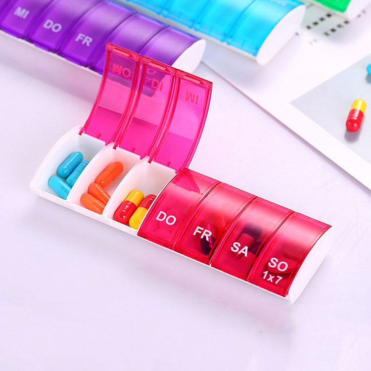

| MATERIALES PARA COMBATIR EL ESTRÉS POSTRAUMÁTICO |
| PSICOTERAPIA
| MEDICAMENTOS
|
Las psicoterapias centradas en el trauma representan el tipo de tratamiento para el trastorno por estrés postraumático más recomendado. "Centrado en el trauma" significa que el tratamiento gira en torno al recuerdo del evento traumático o su significado para, conseguir procesarlo y que deje los sistemas. |
Los medicamentos que han demostrado ser útiles en el tratamiento del trastorno por estrés postraumático son algunos de los mismos utilizados para los sintomas de la depresión y la ansiedad. La mayoría son antidepresivos que afectan a los niveles químicos del cerebro para reestablecer el estado de ánimo. |
.jpg) |
 |